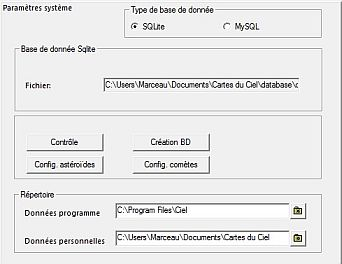
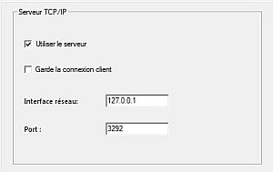
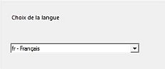

Dans cette fenêtre, vous gérez la base de données CdC. Celle-ci contient les éléments orbitaux des comètes et des astéroïdes, les informations sur les images du catalogue SAC, les informations sur les images DSS/RealSky et celles sur la localisation des obervatoires.
Après l'installation, vous devez créer les éléments orbitaux des comètes et des astéroïdes (voir les onglets comete et asteroide de la fenêtre Configuration > Système solaire).
De même, vous devez créer les informations sur les imagess SAC (voir l'onglet Objet de la fenêtre Configuration > Images).
Des informations détaillées sur la localisation des observatoires peuvent être enregistrées dans la base, pays par pays à partir de l'onglet Configuration > Observatoire.
L'installation standard CdC créé une base de données SQLite, mais vous pouvez choisir entre les SGBD SQLite et MySQL (par exemple pour la partager sur un réseau local).
Répertoire Spécifie le chemin d'installation de CdC et le chemin vers le répertoire de vos données personnelles (Vos_Documents\Carte du Ciel\). Vous pouvez spécifier d'autres répertoires dans le cas d'une installation non standard (Aidez vous de l'icône répertoire à droite de la zone d'entrée).

Ici se règlent les paramètres de connexion de CdC en temps que serveur afin de recevoir des commandes depuis un autre programme.
Vous pouvez vérifier l'état de ces connexions dans Voir > Information sur le serveur
Si vous voulez vous connecter avec votre propre programme consultez la liste des commandes disponibles
 Ici vous pouvez choisir la langue de l'interface graphique de CdC.
{kind=link}
{kind=link}
{kind=link}
{kind=link}